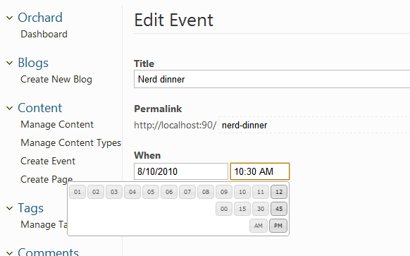
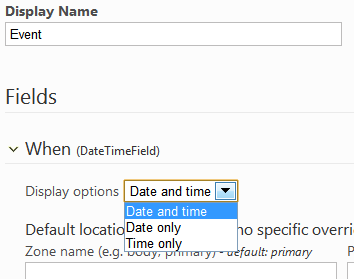
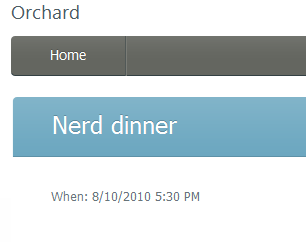

This guide has been marked for review. If you are just getting started with Orchard module development you should read the Getting Started with Modules course first. It will introduce you to building modules with Orchard using Visual Studio Community, a free edition of Visual Studio.
本指南已标记为可供审阅。如果您刚开始使用Orchard模块开发，则应首先阅读[模块入门课程]（模块入门）。它将向您介绍使用Visual Studio社区构建模块，Visual Studio社区是Visual Studio的免费版本。
Fields can be used in Orchard to build new content types.
字段可以在Orchard中用于[构建新内容类型]（Creating-custom-content-types）。
Orchard comes with a few built-in field types such as text, date or enumeration,
Orchard附带了一些内置字段类型，如文本，日期或枚举，
but it is possible to build your own field types that can then be used to build new content types.
但是可以构建自己的字段类型，然后可以使用它们来构建新的内容类型。
This topic will teach you how to add such a new field type. You can find the source code for this tutorial here: http://orcharddatetimefield.codeplex.com/.
本主题将教您如何添加这样的新字段类型。您可以在此处找到本教程的源代码：[http://orcharddatetimefield.codeplex.com/](http://orcharddatetimefield.codeplex.com/）。
We will assume Visual Studio and a full source code enlistment are being used in this topic. It is possible to build this module without it by simply manipulating the csproj file and adding the relevant files in there. Please consult Creating a module with a simple text editor for an example of module building without Visual Studio.
我们假设Visual Studio和完整的源代码登记正在本主题中使用。只需操作csproj文件并在其中添加相关文件，就可以在没有它的情况下构建此模块。请参阅[使用简单文本编辑器创建模块]（使用简单文本编辑器创建模块），以获取不使用Visual Studio的模块构建示例。
Objectives
目标
Learn the steps to add a new field type to Orchard. The goal is to have a Date and Time editor so that any existing or new Content Type can let the user select a Date or a Time very easily.
了解向Orchard添加新字段类型的步骤。目标是拥有一个日期和时间编辑器，以便任何现有或新的内容类型可以让用户非常容易地选择日期或时间。

Creating a Module
创建模块
We will create the new field type inside a new Orchard module so that it can be easily distributed. We will use Code Generation feature for that.
我们将在新的Orchard模块中创建新的字段类型，以便可以轻松分发。我们将使用代码生成功能。
Important: Before you can generate the file structure for your module, you need to download, install, and enable the Code Generation feature for Orchard. For more information, see Command-line Code Generation.
重要事项：在为模块生成文件结构之前，您需要下载，安装并启用Orchard的代码生成功能。有关更多信息，请参阅[命令行代码生成]（命令行脚手架）。
Once the Code Generation feature has been enabled, you can type the following codegen command on the Orchard command-line.
启用代码生成功能后，您可以在Orchard命令行上键入以下codegen命令。
codegen module CustomFields /IncludeInSolution:true
This should create a new CustomFields folder under Modules, pre-populated with a few folders and files. For example, you may open the Module.txt manifest file and modify it:
这应该在Modules下创建一个新的CustomFields文件夹，预先填充了一些文件夹和文件。例如，您可以打开Module.txt清单文件并进行修改：
Name: CustomFields
AntiForgery: enabled
Author: Me
Website: http://orcharddatetimefield.codeplex.com
Version: 0.6.1
OrchardVersion: 0.8.0
Description: A bunch of custom fields for use in your custom content types.
Features:
CustomFields:
Description: Custom fields for Orchard.
Category: Fields
DateTimeField:
Description: A date and time field with a friendly UI.
Category: Fields
Dependencies: CustomFields, Orchard.jQuery, Common, Settings
We are defining two features here because this module will eventually contain more fields and we want to distinguish between the default feature of the module (which has the same name as the module itself and has to exist in any module) and the date field feature. This also demonstrates categories and dependencies.
我们在这里定义了两个特性，因为这个模块最终将包含更多字段，我们希望区分模块的默认特征（与模块本身具有相同的名称，并且必须存在于任何模块中）和日期字段特征。这也演示了类别和依赖关系。
Modeling the Field
对场进行建模
Let's now create a Fields folder inside of our CustomFields folder and create the following DateTimeField.cs file in there:
现在让我们在CustomFields文件夹中创建一个Fields文件夹，并在其中创建以下DateTimeField.cs文件：
using System;
using System.Globalization;
using Orchard.ContentManagement;
using Orchard.ContentManagement.FieldStorage;
using Orchard.Environment.Extensions;
namespace CustomFields.DateTimeField.Fields {
[OrchardFeature("DateTimeField")]
public class DateTimeField : ContentField {
public DateTime? DateTime {
get {
var value = Storage.Get<string>();
DateTime parsedDateTime;
if (System.DateTime.TryParse(value, CultureInfo.InvariantCulture,
DateTimeStyles.AdjustToUniversal, out parsedDateTime)) {
return parsedDateTime;
}
return null;
}
set {
Storage.Set(value == null ?
String.Empty :
value.Value.ToString(CultureInfo.InvariantCulture));
}
}
}
}
The field is defined as a class that derives from ContentField, which gives us a few services for free, such as the storage of the value of the field. The fields will be stored as strings. The conversion of dates to and from strings could be handled automatically, but we are doing it explicitly here to give a good idea of how you would do things for more complex field types.
该字段被定义为派生自ContentField的类，它为我们免费提供一些服务，例如存储字段的值。字段将存储为字符串。可以自动处理与字符串之间的日期转换，但是我们在此处明确地将其用于更好地了解如何为更复杂的字段类型执行操作。
Creating a View Model
创建视图模型
It is good practice (although not mandatory) to create one or several view models that will be used as the model in the admin template that we will use to render instances of our field. Let's create the following DateTimeFieldViewModel.cs file in a new ViewModels folder:
创建一个或多个视图模型是很好的做法（尽管不是强制性的），这些模型将用作管理模板中的模型，我们将使用它来渲染字段的实例。让我们在一个新的ViewModels文件夹中创建以下DateTimeFieldViewModel.cs文件：
namespace CustomFields.DateTimeField.ViewModels {
public class DateTimeFieldViewModel {
public string Name { get; set; }
public string Date { get; set; }
public string Time { get; set; }
public bool ShowDate { get; set; }
public bool ShowTime { get; set; }
}
}
This not only exposes the date and time as separate properties, it also has some parameters that can be passed into the view to customize the rendering.
这不仅将日期和时间公开为单独的属性，还有一些参数可以传递到视图中以自定义渲染。
Creating Settings for the Field
为字段创建设置
This flexibility in rendering that we just introduced in the view model can be exposed as settings for the field. This way, administrators can configure fields on the content types they create in order to adapt them to their exact needs.
我们刚刚在视图模型中引入的渲染灵活性可以作为字段的设置公开。这样，管理员可以配置他们创建的内容类型的字段，以使其适应他们的确切需求。
Create a Settings folder and add the following DateTimeFieldSettings.cs file to it:
创建一个Settings文件夹并向其添加以下DateTimeFieldSettings.cs文件：
namespace CustomFields.DateTimeField.Settings {
public enum DateTimeFieldDisplays {
DateAndTime,
DateOnly,
TimeOnly
}
public class DateTimeFieldSettings {
public DateTimeFieldDisplays Display { get; set; }
}
}
We have defined here an enumeration describing the possible values of our display setting, which is the only setting for the field. The settings class itself is just an ordinary class with one property typed with that enumeration.
我们在这里定义了一个枚举，描述了我们的显示设置的可能值，这是该字段的唯一设置。设置类本身只是一个普通的类，其中一个属性使用该枚举键入。
Writing the Driver
编写驱动程序
Exactly like a part, a field has a driver that will be responsible for handling display and editing actions on the field when it's been added to a content type.
完全像一个部分，一个字段有一个驱动程序，当它被添加到内容类型时，它将负责处理字段上的显示和编辑操作。
Create a Drivers folder and add the following DateTimeFieldDriver.cs:
创建一个Drivers文件夹并添加以下DateTimeFieldDriver.cs：
using System;
using JetBrains.Annotations;
using Orchard;
using Orchard.ContentManagement;
using Orchard.ContentManagement.Drivers;
using CustomFields.DateTimeField.Settings;
using CustomFields.DateTimeField.ViewModels;
using Orchard.ContentManagement.Handlers;
using Orchard.Localization;
namespace CustomFields.DateTimeField.Drivers {
[UsedImplicitly]
public class DateTimeFieldDriver : ContentFieldDriver<Fields.DateTimeField> {
public IOrchardServices Services { get; set; }
// EditorTemplates/Fields/Custom.DateTime.cshtml
private const string TemplateName = "Fields/Custom.DateTime";
public DateTimeFieldDriver(IOrchardServices services) {
Services = services;
T = NullLocalizer.Instance;
}
public Localizer T { get; set; }
private static string GetPrefix(ContentField field, ContentPart part) {
// handles spaces in field names
return (part.PartDefinition.Name + "." + field.Name)
.Replace(" ", "_");
}
protected override DriverResult Display(
ContentPart part, Fields.DateTimeField field,
string displayType, dynamic shapeHelper) {
var settings = field.PartFieldDefinition.Settings
.GetModel<DateTimeFieldSettings>();
var value = field.DateTime;
return ContentShape("Fields_Custom_DateTime", // key in Shape Table
field.Name, // used to differentiate shapes in Placement.info overrides, e.g. Fields_Common_Text-DIFFERENTIATOR
// this is the actual Shape which will be resolved
// (Fields/Custom.DateTime.cshtml)
s =>
s.Name(field.Name)
.Date(value.HasValue ?
value.Value.ToLocalTime().ToShortDateString() :
String.Empty)
.Time(value.HasValue ?
value.Value.ToLocalTime().ToShortTimeString() :
String.Empty)
.ShowDate(
settings.Display == DateTimeFieldDisplays.DateAndTime ||
settings.Display == DateTimeFieldDisplays.DateOnly)
.ShowTime(
settings.Display == DateTimeFieldDisplays.DateAndTime ||
settings.Display == DateTimeFieldDisplays.TimeOnly)
);
}
protected override DriverResult Editor(ContentPart part,
Fields.DateTimeField field,
dynamic shapeHelper) {
var settings = field.PartFieldDefinition.Settings
.GetModel<DateTimeFieldSettings>();
var value = field.DateTime;
if (value.HasValue) {
value = value.Value.ToLocalTime();
}
var viewModel = new DateTimeFieldViewModel {
Name = field.Name,
Date = value.HasValue ?
value.Value.ToLocalTime().ToShortDateString() : "",
Time = value.HasValue ?
value.Value.ToLocalTime().ToShortTimeString() : "",
ShowDate =
settings.Display == DateTimeFieldDisplays.DateAndTime ||
settings.Display == DateTimeFieldDisplays.DateOnly,
ShowTime =
settings.Display == DateTimeFieldDisplays.DateAndTime ||
settings.Display == DateTimeFieldDisplays.TimeOnly
};
return ContentShape("Fields_Custom_DateTime_Edit",
() => shapeHelper.EditorTemplate(
TemplateName: TemplateName,
Model: viewModel,
Prefix: GetPrefix(field, part)));
}
protected override DriverResult Editor(ContentPart part,
Fields.DateTimeField field,
IUpdateModel updater,
dynamic shapeHelper) {
var viewModel = new DateTimeFieldViewModel();
if (updater.TryUpdateModel(viewModel,
GetPrefix(field, part), null, null)) {
DateTime value;
var settings = field.PartFieldDefinition.Settings
.GetModel<DateTimeFieldSettings>();
if (settings.Display == DateTimeFieldDisplays.DateOnly) {
viewModel.Time = DateTime.Now.ToShortTimeString();
}
if (settings.Display == DateTimeFieldDisplays.TimeOnly) {
viewModel.Date = DateTime.Now.ToShortDateString();
}
if (DateTime.TryParse(
viewModel.Date + " " + viewModel.Time, out value)) {
field.DateTime = value.ToUniversalTime();
}
else {
updater.AddModelError(GetPrefix(field, part),
T("{0} is an invalid date and time",
field.Name));
field.DateTime = null;
}
}
return Editor(part, field, shapeHelper);
}
protected override void Importing(ContentPart part, Fields.DateTimeField field,
ImportContentContext context) {
var importedText = context.Attribute(GetPrefix(field, part), "DateTime");
if (importedText != null) {
field.Storage.Set(null, importedText);
}
}
protected override void Exporting(ContentPart part, Fields.DateTimeField field,
ExportContentContext context) {
context.Element(GetPrefix(field, part))
.SetAttributeValue("DateTime", field.Storage.Get<string>(null));
}
}
}
Let's enumerate a few things we're doing in this code in order to explain how it works.
让我们列举一下我们在这段代码中所做的一些事情，以便解释它是如何工作的。
The driver derives from ContentFieldDriver<DateTimeField> in order to be recognized by Orchard and to give strongly-typed access to the field value from the driver's code.
驱动程序派生自ContentFieldDriver <DateTimeField>，以便被Orchard识别，并从驱动程序代码中提供对字段值的强类型访问。
We start by injecting the localizer dependency (the T property) so that we can create localizable strings throughout the code.
我们首先注入localizer依赖项（T属性），以便我们可以在整个代码中创建可本地化的字符串。
The static GetPrefix method is a conventionally defined method that is used to create unique column names in the database for instances of the field type.
静态GetPrefix方法是一种传统定义的方法，用于在数据库中为字段类型的实例创建唯一的列名。
We then have two actions, Display and Editor, which start by fetching the settings and value for the field and build shapes out of them.
然后我们有两个动作，Display和Editor，它们首先获取字段的settings和value并从中构建形状。
Note
！注意
The `UsedImplicitly` attribute is only here to suppress a warning from Resharper.
It could be removed without much harm.
The shapeHelper object provides some helper methods to create shapes, two of which can be seen in action here.
shapeHelper对象提供了一些辅助方法来创建形状，其中两个可以在这里看到。
The second Editor method is the one that is called when the admin form is submitted. Its job is to map the submitted data back into the field and then to call the first Editor method to render the editor on the screen again.
第二个Editor方法是在提交管理表单时调用的方法。它的工作是将提交的数据映射回字段，然后调用第一个Editor方法再次在屏幕上呈现编辑器。
Writing the Templates
编写模板
We need to write the views that will determine how our field is represented in admin and front-end UI.
我们需要编写视图来确定我们的字段在管理员和前端UI中的表示方式。
Create a Fields and an EditorTemplates directory under Views. Then create another Fields directory under EditorTemplates. In Views/Fields, create the following Custom.DateTime.cshtml:
在Views下创建Fields和EditorTemplates目录。然后在EditorTemplates下创建另一个Fields目录。在Views / Fields中，创建以下Custom.DateTime.cshtml：
<p class="text-field"><span class="name">@Model.Name:</span>
@if(Model.ShowDate) { <text>@Model.Date</text> }
@if(Model.ShowTime) { <text>@Model.Time</text> }
</p>
This code renders the name of the field, a colon and then the date and time according to the field's configuration.
此代码根据字段的配置呈现字段的名称，冒号，然后是日期和时间。
Now create a file of the same name under Views/EditorTemplates/Fields with the following contents:
现在在Views / EditorTemplates / Fields下创建一个具有相同名称的文件，其中包含以下内容：
@model CustomFields.DateTimeField.ViewModels.DateTimeFieldViewModel
@{
Style.Include("datetime.css");
Style.Require("jQueryUI_DatePicker");
Style.Require("jQueryUtils_TimePicker");
Style.Require("jQueryUI_Orchard");
Script.Require("jQuery");
Script.Require("jQueryUtils");
Script.Require("jQueryUI_Core");
Script.Require("jQueryUI_Widget");
Script.Require("jQueryUI_DatePicker");
Script.Require("jQueryUtils_TimePicker");
}
<fieldset>
<label for="@Html.FieldIdFor(m => Model.Date)">@Model.Name</label>
@if ( Model.ShowDate ) {
<label class="forpicker"
for="@Html.FieldIdFor(m => Model.Date)">@T("Date")</label>
<span class="date">@Html.EditorFor(m => m.Date)</span>
}
@if ( Model.ShowTime ) {
<label class="forpicker"
for="@Html.FieldIdFor(m => Model.Time)">@T("Time")</label>
<span class="time">@Html.EditorFor(m => m.Time)</span>
}
@if(Model.ShowDate) { <text>@Html.ValidationMessageFor(m=>m.Date)</text> }
@if(Model.ShowTime) { <text>@Html.ValidationMessageFor(m=>m.Time)</text> }
</fieldset>
@using(Script.Foot()) {
<script type="text/javascript">
$(function () {
$("#@Html.FieldIdFor(m => Model.Date)").datepicker();
$("#@Html.FieldIdFor(m => Model.Time)").timepickr();
});
</script>
}
This template is registering a few styles and scripts (note that if other parts register the same files, they will still be rendered only once). Then, it defines the editor as a date picker and a time picker according to the field's configuration. The fields are regular text boxes that are unobtrusively enriched by date and time pickers using jQuery UI plug-ins.
此模板正在注册一些样式和脚本（请注意，如果其他部分注册相同的文件，它们仍将只呈现一次）。然后，它根据字段的配置将编辑器定义为日期选择器和时间选择器。这些字段是常规文本框，使用jQuery UI插件通过日期和时间选择器进行不显眼的丰富。
To specify the order and location where these templates will be rendered within the composed page, we need to add a Placement.info file into the root of the module's directory:
要指定在组合页面中呈现这些模板的顺序和位置，我们需要将“Placement.info”文件添加到模块目录的根目录中：
<Placement>
<Place Fields_Custom_DateTime_Edit="Content:2.5"/>
<Place Fields_Custom_DateTime="Content:2.5"/>
</Placement>
Managing the Field Settings
管理字段设置
We are not quite done yet. We still need to take care of managing and persisting the settings for the field.
我们还没有完成。我们仍然需要注意管理和持续该领域的设置。
Add the following DateTimeFieldEditorEvents.cs file to the Settings folder:
将以下DateTimeFieldEditorEvents.cs文件添加到Settings文件夹：
using System.Collections.Generic;
using Orchard.ContentManagement;
using Orchard.ContentManagement.MetaData;
using Orchard.ContentManagement.MetaData.Builders;
using Orchard.ContentManagement.MetaData.Models;
using Orchard.ContentManagement.ViewModels;
namespace CustomFields.DateTimeField.Settings {
public class DateTimeFieldEditorEvents : ContentDefinitionEditorEventsBase {
public override IEnumerable<TemplateViewModel>
PartFieldEditor(ContentPartFieldDefinition definition) {
if (definition.FieldDefinition.Name == "DateTimeField") {
var model = definition.Settings.GetModel<DateTimeFieldSettings>();
yield return DefinitionTemplate(model);
}
}
public override IEnumerable<TemplateViewModel> PartFieldEditorUpdate(
ContentPartFieldDefinitionBuilder builder, IUpdateModel updateModel) {
var model = new DateTimeFieldSettings();
if (builder.FieldType != "DateTimeField") {
yield break;
}
if (updateModel.TryUpdateModel(
model, "DateTimeFieldSettings", null, null)) {
builder.WithSetting("DateTimeFieldSettings.Display",
model.Display.ToString());
}
yield return DefinitionTemplate(model);
}
}
}
This is the equivalent of a driver, but for field settings. The first method gets the settings and determines the template to render, and the second updates the model with the values from the submitted form and then calls the first.
这相当于驱动程序，但适用于字段设置。第一种方法获取设置并确定要呈现的模板，第二种方法使用提交的表单中的值更新模型，然后调用第一种方法。
The editor template for the field is defined by the following DateTimeFieldSettings.cshtml that you should create in a new DefinitionTemplates folder under Views:
该字段的编辑器模板由以下DateTimeFieldSettings.cshtml定义，您应该在Views下的新DefinitionTemplates文件夹中创建它：
@model CustomFields.DateTimeField.Settings.DateTimeFieldSettings
@using CustomFields.DateTimeField.Settings;
<fieldset>
<label for="@Html.FieldIdFor(m => m.Display)"
class="forcheckbox">@T("Display options")</label>
<select id="@Html.FieldIdFor(m => m.Display)"
name="@Html.FieldNameFor(m => m.Display)">
@Html.SelectOption(DateTimeFieldDisplays.DateAndTime,
Model.Display == DateTimeFieldDisplays.DateAndTime,
T("Date and time").ToString())
@Html.SelectOption(DateTimeFieldDisplays.DateOnly,
Model.Display == DateTimeFieldDisplays.DateOnly,
T("Date only").ToString())
@Html.SelectOption(DateTimeFieldDisplays.TimeOnly,
Model.Display == DateTimeFieldDisplays.TimeOnly,
T("Time only").ToString())
</select>
@Html.ValidationMessageFor(m => m.Display)
</fieldset>
This template creates a label for the setting and then a drop-down that enables the site administrator to pick one of the options for the setting.
此模板为设置创建标签，然后创建一个下拉列表，使站点管理员可以选择该设置的其中一个选项。
Updating the Project File
更新项目文件
If you are using Visual Studio, you should skip this section as your project file has already been updated, provided you saved all (CTRL+SHIFT+S). Otherwise, in order for the Orchard dynamic compilation engine to be able to pick up our new module's cs files, we need to add them to the CustomFields.csproj file.
如果您使用的是Visual Studio，则应该跳过此部分，因为您的项目文件已经更新，前提是您保存了全部（CTRL + SHIFT + S）。否则，为了使Orchard动态编译引擎能够获取新模块的cs文件，我们需要将它们添加到CustomFields.csproj文件中。
Find the <Content Include="Properties\AssemblyInfo.cs"/> line in CustomFields.csproj. If you look at it then you will see that this is inside an <ItemGroup> element. After that end </ItemGroup> for that section add in this code:
在CustomFields.csproj中找到<Content Include =“Properties \\ AssemblyInfo.cs”/>行。如果你看一下它就会看到它在一个<ItemGroup>元素中。在那之后，该部分的“”添加以下代码：
<ItemGroup>
<Compile Include="Drivers\DateTimeFieldDriver.cs" />
<Compile Include="Fields\DateTimeField.cs" />
<Compile Include="Settings\DateTimeFieldEditorEvents.cs" />
<Compile Include="Settings\DateTimeFieldSettings.cs" />
<Compile Include="ViewModels\DateTimeFieldViewModel.cs" />
</ItemGroup>
Adding the Style Sheet
添加样式表
Create a Styles directory and create the following datetime.css:
创建一个Styles目录并创建以下datetime.css：
html.dyn label.forpicker {
display:none;
}
html.dyn input.hinted {
color:#ccc;
font-style:italic;
}
.date input{
width:10em;
}
.time input {
width:6em;
}
Using the Field
使用Field
In order to be able to use the new field, you must first make sure that the Orchard.ContentTypes feature is enabled. Also enable our new DateTimeField feature under Fields. Once it is, you can click on Manage content types in the admin menu. Click Create new type and give it the name "Event". Click Add next to fields and type in "When" as the name of the field. Select our new DateTime field type as the type of the field.
为了能够使用新字段，必须首先确保启用了“Orchard.ContentTypes”功能。还可以在Fields下启用新的DateTimeField功能。完成后，您可以单击管理菜单中的管理内容类型。单击创建新类型并将其命名为“事件”。单击字段旁边的添加，然后键入“When”作为字段的名称。选择我们新的DateTime字段类型作为字段的类型。
Now in the type editor, you should see our new When field, and you should be able to deploy its settings section by clicking the ">" on its left:
现在在类型编辑器中，您应该看到我们新的“When”字段，您应该可以通过单击其左侧的“＆gt; ”来部署其设置部分：

We chose to keep both date and time displayed. The settings for the field are also the opportunity to determine where the field will appear on the front end if you want to override the defaults. Let's skip that for now. Add the Route part so that our events can have a title, then hit Save.
我们选择保持显示日期和时间。如果要覆盖默认值，字段的设置也可以确定字段在前端的显示位置。我们暂时跳过这个。添加Route部分，以便我们的事件可以有一个标题，然后点击Save。
We can now add a new event by clicking Create Event in the admin menu. The editor that gets created for us has a when field with nice date and time pickers:
我们现在可以通过单击管理菜单中的创建事件来添加新事件。为我们创建的编辑器有一个带有不错的日期和时间选择器的when字段：
Create an event and save it. You can now view it on the site:
创建一个事件并保存。您现在可以在网站上查看它：

Getting the Code
获取代码
Download the code here: CustomFields.zip. The code is also hosted on http://orcharddatetimefield.codeplex.com/.
在此处下载代码：[CustomFields.zip]（../ Attachments / Creating-a-custom-field-type / CustomFields.zip）。该代码也托管在[http://orcharddatetimefield.codeplex.com/](http://orcharddatetimefield.codeplex.com/）上。